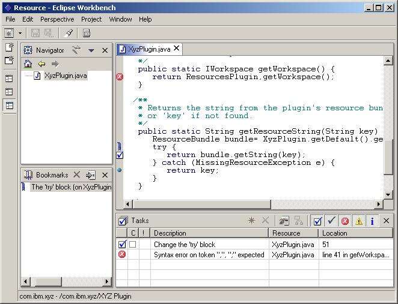

| Eclipse Corner Article |

Summary
Eclipse workbench has a central mechanism for managing resource annotations. They are called markers. In this article, you will learn how to use markers to mark-up resources as well as how to define your own marker types and enhance the Tasks view to handle them in a special way.By Dejan Glozic, IBM and Jeff McAffer, OTI
April 1, 2001
Eclipse-based applications may be quite complex, consisting of many plug-ins. Each plug-in may have a need to tag resources to communicate problems and other information to the user. In order to assist plug-in writers and ensure consistent user experience, the Eclipse platform has a central mechanism, called markers which manages this information.
A marker is like a yellow sticky note stuck to a
resource. On the marker you can record information about a problem (e.g.,
location, severity, ...), a task to be done or simply remember the location of
the marker as a bookmark. Users can quickly jump to the marked
location.
There are several pre-defined marker types supplied by the platform:
Problems - for representing invalid states (errors, warnings, information) |
|
Tasks - for capturing user created reminders (todo's) |
|
Bookmarks - for marking a location that can be quickly jumped to later |
The set of marker types and attributes managed by the platform is extensible. As a matter of fact, the IMarker interface has very few methods which are type- or attribute-specific. Given a marker, you can ask for its associated resource, the marker's id (unique relative to that resource) and its type. You can also access additional information encoded as generic attributes.
Attributes are maintained as name/value pairs where the names are strings and a value can be any one of the supported value types (Boolean, Integer, String). The limitation on value types allows the platform to persistent the markers quickly and simply (its hard to persist generic Objects).
You might ask - "if everything is an attribute, how do I do simple things like manipulating marker message or priority?" The answer lies in naming conventions. The IMarker interface defines a set of constants containing standard attribute names and values which are used when getting and setting attributes. For example:
public void manipulateMarker(IMarker marker) {
// test to see if the marker really exists. Perhaps its stale?
if (!marker.exists())
return;
try {
marker.setAttribute(IMarker.MESSAGE, "A sample marker message");
marker.setAttribute(IMarker.PRIORITY, IMarker.PRIORITY_HIGH);
} catch (CoreException e) {
// You need to handle the cases where attribute value is rejected
}
}
Since there is no way the platform could anticipate all possible uses of markers, the set of attributes is not fixed - users can declare new marker types and new attributes. Plug-in developers create their own types by configuring extensions in their plug-in manifest. While problems, tasks and bookmarks are well-known marker types which appear embedded in the platform, they are in fact declared by the platform using exactly the same mechanism available to plug-in developers!
New marker types are derived from existing ones using multiple inheritance. New marker types inherit all of the attributes from their supertypes and add any new attributes defined as part of the declaration. They also transitively inherit the supertypes of their supertypes. Consider the following markup extracted from the com.example.markers.r.us plug-in:
<extension id="coolmarker" point="org.eclipse.core.resources.markers"/> <extension id="coolproblem" point="org.eclipse.core.resources.markers"> <super type="org.eclipse.core.resources.problemmarker"/> <super type="com.example.markers.r.us.coolmarker"/> <attribute name="coolFactor"/> <persistent value="true"/> </extension>
Note that the marker type org.eclipse.core.resources.problemmarker is actually one of the pre-defined types (aka IMarker.PROBLEM). The only part of a marker supertype that is not inherited is its persistence flag. While the standard marker types (task, problem and bookmark) are declared as persistent, by default, new marker types are not persistent. The platform will not save their state between sessions. If developers declare their marker types as persistent (as shown above), the state of markers of that type will be saved and restored by the platform.
After placing the above declaration into your plug-in manifest file, you can create instances of coolproblem marker type and freely set or get coolFactor attribute (see example below). The new attributes allow you to associate data with markers that you plan to use elsewhere (in your views, editors etc.). Markers of a particular type do not have to have values for all of the declared attributes. The attribute declarations are more for solving naming convention problems (so everyone uses "message" to talk about a marker's description) than they are for constraining content.
public IMarker createCoolMarker(IResource resource) {
try {
IMarker marker = resource.createMarker("com.example.markers.r.us.coolproblem");
marker.setAttribute("coolFactor", "ULTRA");
return marker;
} catch (CoreException e) {
// You need to handle the cases where attribute value is rejected
}
}
The real power of defining your own marker types comes from the query facilities built-into the platform. The query in the code below finds all coolmarkers associated with the given target resource and all its descendents. Note that this will also find all coolproblems.
public IMarker[] findCoolMarkers(IResource target) {
String type = "com.example.markers.r.us.coolmarker";
IMarker[] markers = target.findMarkers(type, true, IResource.DEPTH_INFINITE);
}
You don't have to look hard to spot markers in the platform. Just open the Tasks view, create a sample Java™ project, open a Java file for editing and type something obviously wrong. You will soon see error markers in the Tasks view, one per syntax error. And since you have Java editor opened, you can also select a line of code and place a bookmark there. If you open Bookmarks view, you will see the newly created bookmark. Similarly, you can set breakpoint markers for the purpose of debugging your code. All of these markers appear together in the vertical left sidebar (Figure 1).
The standard platform can display and manage any of the pre-defined marker types. A standard set of images are used to denote a marker's type, priority, severity etc. as appropriate. The presentation is maintained for extended types as well - supertypes will be used in that case. For example, if your marker extends the task marker type, it will look like a task in the workbench but will still be able to carry additional attributes. If you create a new breed of marker that does not inherit from the pre-defined types (e.g., tasks, problems or bookmarks), or want to change the way markers are presented, you can define new views which give the desired look and feel.
|  |
|
Figure 1: Places where markers show up in the platform. |
Marker changes will be reported in resource deltas. Resource change listeners are able to detect this by checking the change flags to see if the delta represents changes in the resource, in its markers, or both.
It is interesting to note that markers cannot be directly created (using the constructor). They are created using a factory method (IResource.createMarker()) on the resource they will be associated with. If you need to create a marker that has a global scope (not associated with any specific resource), you need do it on the workspace root (see IWorkspace.getRoot()).
public void createMarkerForResource(IResource resource) throws CoreException {
IMarker marker = resource.createMarker("com.example.markers.r.us.coolproblem");
//Once we have a marker object, we can set its attributes
marker.setAttribute("coolFactor", "ULTRA");
marker.setAttribute(IMarker.SEVERITY, IMarker.SEVERITY_ERROR);
marker.setAttribute(IMarker.MESSAGE, "Variable 'i' has not been defined.");
}
At a later point in time, you may want to remove the marker you
have created. If you still have a handle to it, you will do something like
this:
try {
marker.delete();
} catch (CoreException e) {
// Something went wrong
}
Any time during the session, you can query the resources for
markers. If resource is a folder or a workspace root, you can also ask for
markers associated with resource children. For example, querying the workspace root
with infinite depth considers all of the markers in the workspace.
IMarker[] problems = null;
int depth = IResource.DEPTH_INFINITE;
try {
problems = resource.findMarkers(IMarker.PROBLEM, true, depth);
} catch (CoreException e) {
// something went wrong
}
The result of the code snippet above depends on how you tweak the arguments in
the findMarkers
call. For example, if you pass null for the marker type, you will get all the
markers associated with the resource. The depth argument controls the depth of
the search. The depth can be limited to zero (just the given resource), one (the
resource and all its direct children) or infinite (the resource and all direct
and indirect children). Finally, you can specify if you want to include only markers of the
specified type or markers of all subtypes as well.
Batches of markers can be deleted using the same specification technique and deleteMarkers() (identical signature). This method is useful when removing markers in numbers or when individual marker references or IDs are not available.
The most general statement of marker usage is to say that markers allow plug-ins and/or users to highlight points of interest. They are very much like bookmarks in typical web browsers except that they may be automatically generated by plug-ins.
The most obvious way to use markers in a plug-in is to communicate build problems. Java Development Tooling plug-in, for example, uses markers to inform users about Java compilation errors and warnings. These markers show up in the Tasks view and users can use them to jump directly to the Java editor at the error location.
Task markers are ideal as user reminders when generated by plug-ins that create entire projects using elaborate wizards and templates. While the wizard instantiates the template it adds task markers to highlight areas where users needs to fill in content or make choices. Users can then jump in and quickly fill in the blanks.
Whatever the usage, it is important to remember that the platform manages markers, but it is the plug-ins that control their creation, removal and attribute values. The platform will throw away markers attached to resources which are deleted but you are responsible for removing stale markers when they no longer apply to a resource which lives on. Stale markers can be very confusing to users and will make them search for problems when there aren't any.
Markers are intended to be small, lightweight objects. There is the potential of hundreds, even thousands of markers in a single Eclipse project. Keep this in mind when defining new marker types with lots of new attributes. When used in moderation, additional attributes can be used by other platform artifacts for a powerful effect. For example, Eclipse UI plug-in uses a Boolean attribute to mark the task completed.
It is possible to combine new attributes and the ability to extend Tasks view pop-up menu and local tool bar and provide additional behavior for your markers. For example, spec compliance warning marker can carry violated spec index as an attribute. An added pop-up menu action can use this information to show a dialog with the entire text of the violated spec with suggestions for fixing the problem. Note how we increased the footprint of the marker only slightly (one Integer object) by keeping the actual spec text in an indexed table elsewhere.
This article has shown that the Eclipse platform has a central mechanism for managing annotations on resources. Techniques for performing basic operations on markers, extending the basic marker types and creatively tapping into marker attributes for interesting effect were also shown.
Java and all Java-based trademarks and logos are trademarks or registered trademarks of Sun Microsystems, Inc. in the United States, other countries, or both.